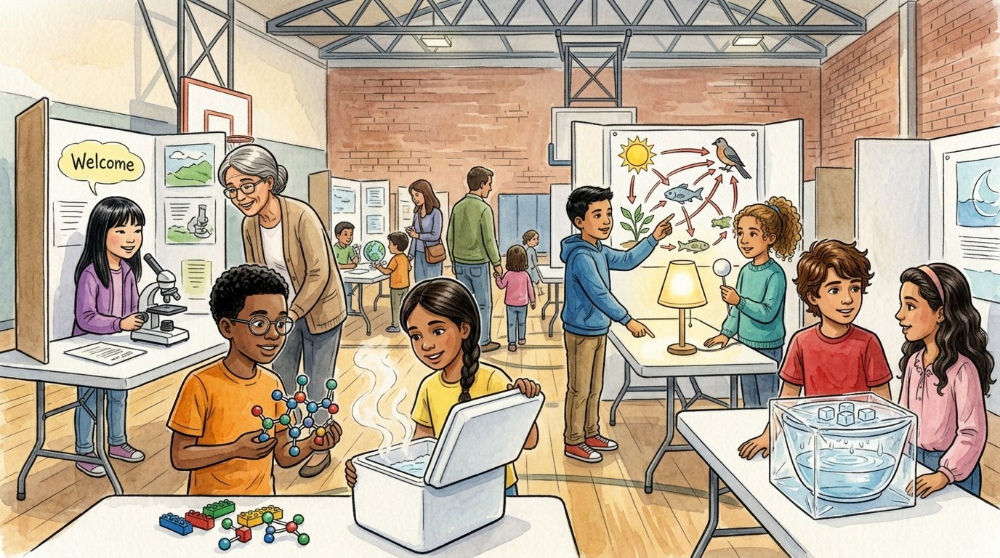

Grade 6 · Science · MS-PS1 · MS-PS2 · MS-PS3 · MS-LS1 · MS-LS2 · MS-ESS1 · MS-ESS2 · MS-ESS3
The science expo
A story that reviews everything the friends learned in sixth grade science.
La feria de ciencias. Un cuento que repasa todo lo que aprendieron los amigos en las ciencias de sexto grado.
Science words you will learn
Tap a green word to see what it means.
Toca una palabra verde para ver qué significa. Con la ayuda activada, verás también la definición en español.
The story
El cuento está en inglés. Pulsa «Listen to the story» para escucharlo y toca las palabras verdes cuando no entiendas una.
On the last Friday of May, the school gym was full of tables, posters and families. It was the sixth grade science expo, and every visitor got a passport to stamp at each station. Ms. Rivera walked around with a clipboard and a proud smile.
At the first table, Daniel snapped bricks together. "Everything you can touch is , and all matter is made of atoms," he told a little boy. "Atoms join to make molecules. Two hydrogens and one oxygen make water." The boy built a molecule and ate a cookie at the same time.
At the next table, Salma opened her foam cooler, and steam rose up. "Thermal always moves from warm to cold," she explained. "Insulators, like foam and trapped air, slow it down. That's how my tamales stayed hot for two hours." Several parents asked for tamales instead of the explanation.
At a small side table, Israel pushed two toy sleds, one gently and one hard. "The bigger the push, the more the sled speeds up," he said. "And the heavier sled needs a bigger push to change its motion." Next to him, a poster showed a cup of ice melting into water and a fizzing cup of baking soda and vinegar: one change of state and one chemical reaction.
Sophia's grandmother looked into a microscope and gasped. "Those are my cheek cells?" "Yes, Grandma," said Sophia. "All living things are made of cells. You have trillions, and they form tissues, organs and organ systems that work together, like a team."
Israel stood in front of his giant food web. "Energy comes from the sun, enters through producers and flows through the consumers," he said. "But the matter doesn't disappear. Decomposers break down dead things, and the matter cycles back to be used again."
In a dark corner, Athena held her white ball in front of the lamp, and a crowd watched the phases appear. Next to her, Elías and Selena showed their bowl model. "The sun's energy evaporates water, and gravity pulls it back down as rain," said Selena. "The same water goes around and around." "And if a storm brings a tornado warning," added Elías, "go to an inside hallway. Data and radar give us time."
At the end of the day, Ms. Rivera gathered the friends. "Every station used a , every idea had , and every question started an ," she said. "That's what scientists do. And all these topics are part of one big : our planet."
Daniel looked at his empty cookie plate. "One last investigation," he said. "Where did forty-eight cookies go?" Israel brushed crumbs off his shirt. "Matter isn't lost," he said. "It just changes places."
Glossary
- evidence
- Facts or observations that show whether an idea is true.
- evidencia: Datos u observaciones que muestran si una idea es verdadera.
- model
- A drawing, object or plan that helps explain something too small, too big or too far to see.
- modelo: Un dibujo, objeto o plan que ayuda a explicar algo demasiado pequeño, grande o lejano para verlo.
- energy
- The ability to cause change, like making things move, heat up or grow.
- energía: La capacidad de causar un cambio, como hacer que las cosas se muevan, se calienten o crezcan.
- matter
- Anything that has mass and takes up space. All matter is made of atoms.
- materia: Todo lo que tiene masa y ocupa espacio. Toda la materia está hecha de átomos.
- system
- A group of parts that work together, like the body, an ecosystem or the Earth-sun-moon system.
- sistema: Un grupo de partes que trabajan juntas, como el cuerpo, un ecosistema o el sistema Tierra-Sol-Luna.
- investigation
- A careful plan to answer a scientific question by testing and collecting data.
- investigación: Un plan cuidadoso para responder una pregunta científica haciendo pruebas y reuniendo datos.
Questions
Choose the correct answer. If you make a mistake, the story shows you where the answer is.
Elige la respuesta correcta. Si te equivocas, el cuento te muestra dónde está la respuesta.
-
Question A. What did Daniel explain at his station?
¿Qué explicó Daniel en su estación?
Daniel explained that all matter is made of atoms, and atoms join to make molecules like water.
-
Question B. How did Salma's cooler keep the tamales hot?
¿Cómo mantuvo calientes los tamales la hielera de Salma?
Thermal energy moves from warm to cold, and insulators like foam and trapped air slow it down.
-
Question C. What did Sophia tell her grandmother about cells?
¿Qué le dijo Sophia a su abuela sobre las células?
All living things are made of cells, and in people trillions of cells form tissues, organs and organ systems.
-
Question D. What happens to matter in a food web?
¿Qué le pasa a la materia en una red alimentaria?
Decomposers break down dead things, and the matter cycles back to be used again.
-
Question E. What two things drive the water cycle?
¿Qué dos cosas mueven el ciclo del agua?
The sun's energy evaporates water, and gravity pulls it back down as rain.
Challenge: explain your thinking
Connect the ideas
Pick two stations from the expo that are connected. For example, how are the water cycle and states of matter connected, or cells and the food web? Explain the connection using evidence from two stories.
Conecta las ideas. Elige dos estaciones de la feria que estén conectadas. Por ejemplo, ¿cómo se relacionan el ciclo del agua y los estados de la materia, o las células y la red alimentaria? Explica la conexión con evidencia de dos cuentos.
Answer in your notebook or talk it over with a classmate. Use evidence from the story.
Responde en tu cuaderno o coméntalo con un compañero. Usa evidencia del cuento.
Check your thinking
Example: the water cycle depends on states of matter. When the sun adds thermal energy, liquid water evaporates into a gas, and when water vapor loses energy, it condenses back into liquid drops. Another example: every living thing in a food web is made of cells, and cells use the energy and matter that move through the web.